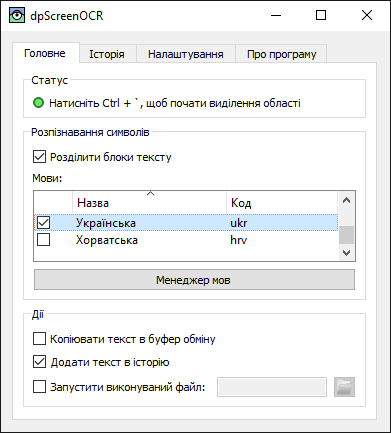

dpScreenOCR — це програма для розпізнавання тексту на екрані. Завдяки Tesseract вона підтримує понад 100 мов і може розбивати незалежні блоки тексту, такі як колонки. Прочитайте посібник користувача для отримання інструкцій зі встановлення, налаштування та використання.
Завантажте версію 1.3.0 (зміни, ліцензія):